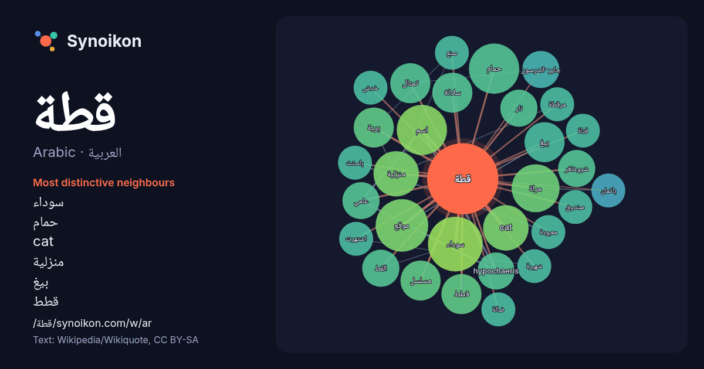

العربية · Arabic · popular word
قطة
“cat” · The words found around it in 329 instances from Arabic Wikipedia, Wikiquote.

Most distinctive neighbours
- سوداء 12×
- حمام 11×
- cat 10.0×
- منزلية 9.4×
- بيغ 7.9×
- قطط 7.7×
- تمثال 7.5×
- مراة 7.5×
- موقع 7.2×
- جاير-اندرسون 7.0×
- hypochaeris 7.0×
- برية 7.0×
- شرودنغر 7.0×
- القط 6.9×
- سلالة 6.9×
- معبودة 6.0×
- باستت 6.0×
- مرقطة 6.0×
- ضالة 6.0×
- خدش 6.0×
× = how many times more often than in general Arabic Wikipedia text.
Most frequent neighbours
- سوداء 13
- موقع 12
- اسم 11
- حمام 11
- فيلم 11
- مراة 10
- cat 9
- منزلية 9
- برية 7
- بيغ 7
- تمثال 7
- سلالة 7
- شخصية 7
- قطط 7
- مسلسل 7
- hypochaeris 6
- اكبر 6
- القط 6
- انثي 6
- جاير-اندرسون 6
In context
- في كتاب أساطير اليهود أن أول قطة عاشت في منزل أبو البشر آدم كحيوان أليف للقضاء على الفئران، وجمعت علاقة صداقة بين القطة والكلب الأول قبل أن يحنث الأخير Wikipedia snippets · قط
- (يسار) والمرقط (يمين) قطط العتابي البريطانية قصيرة الشعر قطة صدفة سلحفاة سوداء ("تورتي"). قطة الإسقمري الأسود صدفة السلحفاة العتابية والبيضاء ذات الألوان Wikipedia snippets · قط عتابي
- وتطبيقاتها اليومية. تخيل شرودنغر تجربة ذهنية تم فيها حبس قطة داخل صندوق مزود بغطاء، وكان مع القطة عداد غايغر وكمية ضئيلة من مادة مشعة بحيث يكون احتمال تحلل Wikipedia snippets · قطة شرودنغر
- قطة جاير-أندرسون قطة جاير-أندرسون معروضة في المتحف البريطاني تعديل - تعديل مصدري - تعديل ويكي بيانات قطة جاير-أندرسون هي تمثال مصري قديم لقط، يعود تاريخه Wikipedia snippets · قطة جاير-أندرسون
- القطة السوداء هي قطة محلية ذات فرو أسود من سلالة القطط الأصيلة أو المختلطة، واعترفت جمعية (CFA) بأثنين وعشرين نوع من سلالة القطط الذين يولدون بفراء سوداء، Wikipedia snippets · قط أسود
- دائمًا بعد جيل أو جيلين فقط. كان جين ميل وهو المربي الذي قرر صنع قطة منزلية بمعطف مثل قطة برية. منح جان ميل أوف كاليفورنيا الفضل في سلالة البنغال الحديثة Wikipedia snippets · قط البنغال
- قطة على نار هو فيلم مصري عرض عام 1977، من بطولة نور الشريف وبوسي وفريد شوقي، الفيلم مأخوذ عن مسرحية «قطة فوق صفيح ساخن» تينيسي وليامز ومن إخراج سمير سيف Wikipedia snippets · قطة على نار (فلم)
- كريم باف (قطة) (3 أغسطس 1967-6 أغسطس 2005) كانت قطة منزلية من نوع التابي المختلط، مملوكة لجيك بيري من أوستن، تكساس. كانت أكبر قطة مسجلة على الإطلاق، وفقًا Wikipedia snippets · كريم باف (قطة)
More Arabic words
- أغنية
- إله
- تاريخ
- جبل
- جرس
- جزيرة
- جسر
- حديقة
- حصان
- حقيقة
- حياة
- خبز
- خريطة
- خريف
- ذهب
- زمن
- ساعة
- شاي
- شتاء
- صحة
- صحراء
- صمت
- صيف
- طبيعة
- طريق
- طعام
- ظل
- عائلة
- عاصفة
- عسل
- علم
- عمل
- غابة
- فن
- قطار
- قلب
- قوة
- كلب
- لغة
- ماء
- مال
- مدينة
- مرآة
- مطر
- ملح
- مناخ
- موت
- نجم
- والدة
Precomputed on 2026-10-09 with default settings (±5 words, medium corpus). The interactive map can refresh it with live data.